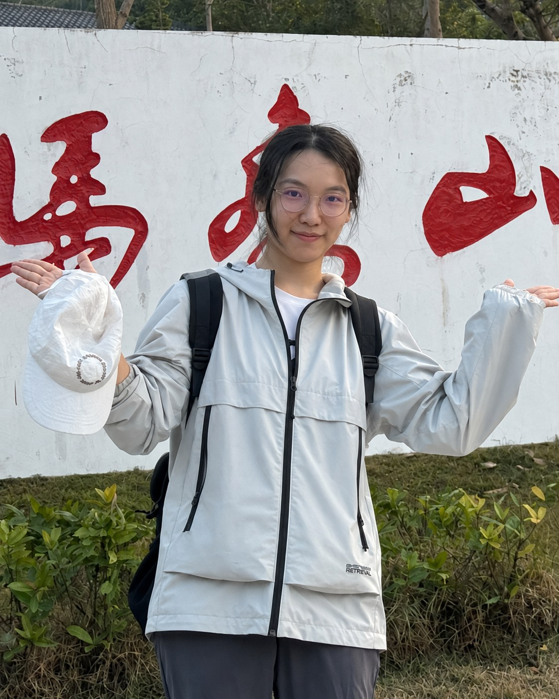

Precision sensing & motion
Calibration, position estimation and intelligent physical systems. I would like to extend my equipment experience toward robotics, motion sensing and biomechanics.
Connecting physical understanding with algorithms that sense, interpret and act.
My background spans physics, electrical engineering and industrial software development—from computational materials research to on-device deep learning and precision industrial equipment.
Get in touch ↗
I am interested in research where physical models, measurement and computation meet, with a particular emphasis on precise motion and perception.
Calibration, position estimation and intelligent physical systems. I would like to extend my equipment experience toward robotics, motion sensing and biomechanics.
Inverse problems, image understanding and learning from sensor data, including biomedical signals and resource-constrained deployment.
Measurement and algorithms for semiconductor equipment, alongside computational approaches to understanding and predicting physical processes.
Developed C++ software, algorithms and communication components for precision industrial equipment. My work involved measurement data processing, coordinate calibration, operating-parameter calculations and module integration.
I also contributed to integration and embedded-related testing, connecting algorithm implementation with equipment behavior.
C++Coordinate calibrationEquipment integrationWorked on a compact deep learning pipeline for offline text recognition on smartphones. The project involved model modifications, training, ablation studies and mobile deployment, with an Android demonstration.
This work developed my experience in evaluating the trade-offs between model size, inference latency and recognition accuracy, and in taking a model from experimentation to a working device.
Deep learningMobileNetV3 / FPNPaddleOCRC++ / JavaConducted a computational study of oxidation and adsorption in MoS₂. This project provided an early connection between my physics training and computational investigation of material behavior.
Computational physicsMaterials simulationMoS₂Electrical Engineering
Master’s thesis supervisor: Justin Dauwels ↗
Training in signal processing, biomedical signal processing, machine learning, wavefield imaging, optimization and control.
Physics
Bachelor’s thesis supervisor: Hu Xu ↗
Foundations in mechanics, electromagnetism, solid-state physics, mathematical methods and experimental physics.